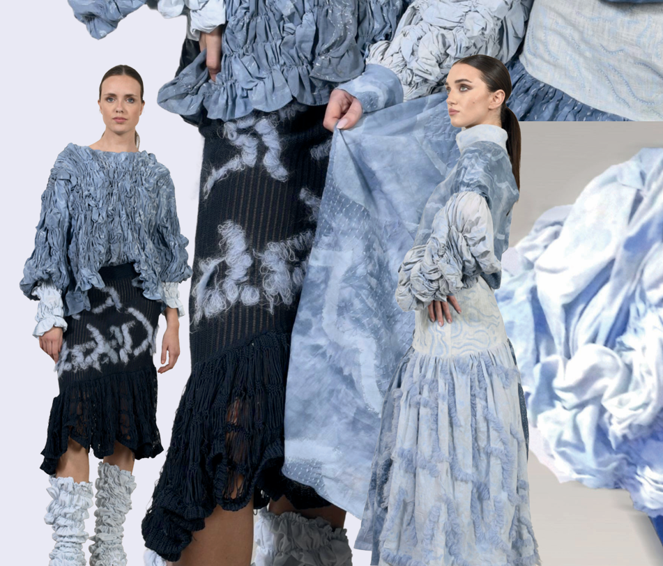
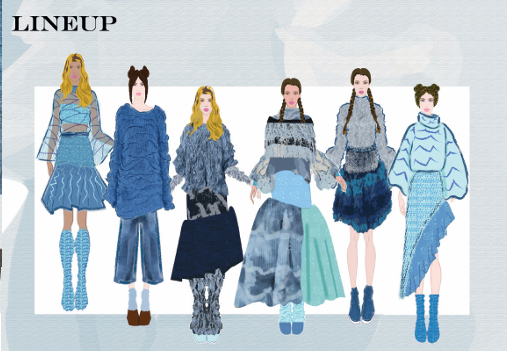

Wiki Urawska grew up the only Polish child in her corner of Mayo — split, as she puts it, between a Polish self at home and an Irish one everywhere else. For her final-year collection, she finally let both speak at once: Polish folk silhouettes cut from textiles inspired entirely by the Irish landscape, dyed in a blue she calls unmistakably hers.
"I was often split between my Polish persona at home and the Irish one outside — it was more up to me what parts I wanted to engage with."
"The silhouettes became inspired by Polish folk wear, while the textiles were inspired by Irish landscapes. It was me putting myself into this collection."
"I knit everything to size of the pattern, preventing waste — even my woven skirt was fully woven to shape."


Every look in Folklor uses a different textile — some woven so fine they were almost impossible to machine-sew, others knit with deliberately oversized stitches. It's a collection that looks different in sun than in shade, which Wiki says is exactly what she loves most about Mayo. She showed the collection at the Polish Arts Festival before deciding to pivot toward a Masters in Digital Marketing, using it to build business footing while she interns as a fabric designer.